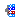
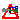
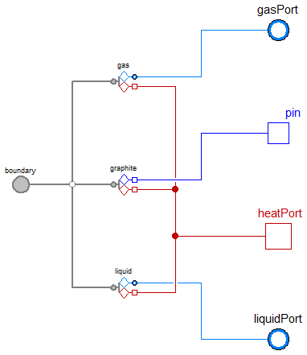
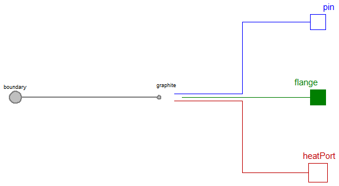

Table of Contents
- User's Guide
- Blocks
- Conditions
- Assemblies
- Regions
- Subregions
- Phases
- Species
- Connectors
- Characteristics
- Units
- Quantities
- Utilities
- Icons
Download
- Latest version (**Empty; please check back soon or contact kdavies4 at gmail.com.)

| Name | Description |
|---|---|
|  Anode | Adapter between Modelica and the face connector of a Cell, Region, or Subregion |
| Cathode | Adapter between Modelica and the face connector of a Cell, Region, or Subregion |
|  Conductor | Adapter between Modelica and the face connector of a Cell, Region, or Subregion, with only the graphite phase included |
| Adapters for material phases | |
| Adapters for single species | |
| Modelica junctions between pure substances and their mixtures | |
| Modelica media models to interface with the cell |

| Type | Name | Description |
|---|---|---|
| FaceBus | face | Multi-species connector for translational momentum and heat |
| FluidPort_b | gasPort | Modelica fluid port for the gas |
| NegativePin | pin | Modelica electrical pin |
| HeatPort_b | heatPort | Modelica heat port |
| FluidPort_b | liquidPort | Modelica fluid port for the liquid |
| Flange_a | flange[Axis] | Modelica translational flanges |
model Anode "Adapter between Modelica and the face connector of a Cell, Region, or Subregion" extends FCSys.Icons.Names.Top4; replaceable package GasMedium = Media.AnodeGas constrainedby Modelica.Media.Interfaces.PartialMedium "Medium model for the gas"; replaceable package LiquidMedium = Modelica.Media.Water.ConstantPropertyLiquidWater constrainedby Modelica.Media.Interfaces.PartialMedium "Medium model for the liquid"; Connectors.FaceBus face "Multi-species connector for translational momentum and heat"; Modelica.Fluid.Interfaces.FluidPort_b gasPort(redeclare final package Medium = GasMedium) "Modelica fluid port for the gas"; Modelica.Electrical.Analog.Interfaces.NegativePin pin "Modelica electrical pin"; Modelica.Thermal.HeatTransfer.Interfaces.HeatPort_b heatPort "Modelica heat port"; Modelica.Fluid.Interfaces.FluidPort_b liquidPort(redeclare final package Medium = LiquidMedium) "Modelica fluid port for the liquid"; Phases.AnodeGas gas(redeclare final package Medium = GasMedium) "Gas subadapter"; Phases.Graphite graphite "Graphite subadapter"; Phases.Liquid liquid(redeclare final package Medium = LiquidMedium) "Liquid subadapter"; Modelica.Mechanics.Translational.Interfaces.Flange_a flange[Axis] "Modelica translational flanges"; equation connect(gas.face, face.gas); connect(gasPort, gas.fluidPort); connect(gas.heatPort, heatPort); connect(graphite.face, face.graphite); connect(graphite.pin, pin); connect(graphite.heatPort, heatPort); connect(liquid.face, face.liquid); connect(liquidPort, liquid.fluidPort); connect(liquid.heatPort, heatPort); connect(gas.flange, flange); connect(graphite.flange, flange); connect(liquid.flange, flange); end Anode;
| Type | Name | Description |
|---|---|---|
| FaceBus | face | Multi-species connector for translational momentum and heat |
| FluidPort_b | gasPort | Modelica fluid port for the gas |
| NegativePin | pin | Modelica electrical pin |
| HeatPort_b | heatPort | Modelica heat port |
| FluidPort_b | liquidPort | Modelica fluid port for the liquid |
| Flange_a | flange[Axis] | Modelica translational flanges |
model Cathode "Adapter between Modelica and the face connector of a Cell, Region, or Subregion" extends FCSys.Icons.Names.Top4; replaceable package GasMedium = Adapters.Media.CathodeGas constrainedby Modelica.Media.Interfaces.PartialMedium "Medium model for the gas"; replaceable package LiquidMedium = Modelica.Media.Water.ConstantPropertyLiquidWater constrainedby Modelica.Media.Interfaces.PartialMedium "Medium model for the liquid"; Connectors.FaceBus face "Multi-species connector for translational momentum and heat"; Modelica.Fluid.Interfaces.FluidPort_b gasPort(redeclare final package Medium = GasMedium) "Modelica fluid port for the gas"; Modelica.Electrical.Analog.Interfaces.NegativePin pin "Modelica electrical pin"; Modelica.Thermal.HeatTransfer.Interfaces.HeatPort_b heatPort "Modelica heat port"; Modelica.Fluid.Interfaces.FluidPort_b liquidPort(redeclare final package Medium = LiquidMedium) "Modelica fluid port for the liquid"; Phases.CathodeGas gas(redeclare final package Medium = GasMedium) "Gas subadapter"; Phases.Graphite graphite "Graphite subadapter"; Phases.Liquid liquid(redeclare final package Medium = LiquidMedium) "Liquid subadapter"; Modelica.Mechanics.Translational.Interfaces.Flange_a flange[Axis] "Modelica translational flanges"; equation connect(gas.face, face.gas); connect(gasPort, gas.fluidPort); connect(gas.heatPort, heatPort); connect(graphite.face, face.graphite); connect(graphite.pin, pin); connect(graphite.heatPort, heatPort); connect(liquid.face, face.liquid); connect(liquidPort, liquid.fluidPort); connect(liquid.heatPort, heatPort); connect(gas.flange, flange); connect(graphite.flange, flange); connect(liquid.flange, flange); end Cathode;

| Type | Name | Description |
|---|---|---|
| FaceBus | face | Multi-species connector for translational momentum and heat |
| NegativePin | pin | Modelica electrical pin |
| HeatPort_b | heatPort | Modelica heat port |
| Flange_a | flange[Axis] | Modelica translational flanges |
model Conductor "Adapter between Modelica and the face connector of a Cell, Region, or Subregion, with only the graphite phase included"extends FCSys.Icons.Names.Top4; replaceable package GasMedium = Adapters.Media.CathodeGas constrainedby Modelica.Media.Interfaces.PartialMedium "Medium model for the gas"; replaceable package LiquidMedium = Modelica.Media.Water.ConstantPropertyLiquidWater constrainedby Modelica.Media.Interfaces.PartialMedium "Medium model for the liquid"; Connectors.FaceBus face "Multi-species connector for translational momentum and heat"; Modelica.Electrical.Analog.Interfaces.NegativePin pin "Modelica electrical pin"; Modelica.Thermal.HeatTransfer.Interfaces.HeatPort_b heatPort "Modelica heat port"; Phases.Graphite graphite "Graphite subadapter"; Modelica.Mechanics.Translational.Interfaces.Flange_a flange[Axis] "Modelica translational flanges"; equation connect(graphite.face, face.graphite); connect(graphite.pin, pin); connect(graphite.heatPort, heatPort); connect(graphite.flange, flange); end Conductor;